Datos e indicadores electorales de Uruguay
Cronograma electoral de Uruguay 1918-1919
##
##
## --- Cantidad de elecciones ------------------------------------
##
## --> Presidencial : 20 (34%)
## --> Balotaje : 4 (7%)
## --> Departamental : 20 (34%)
## --> Legislativa : 10 (17%)
## --> Consejo Nacional de Administracion : 4 (7%)
##
## ---------------------------------------------------------------
Base de datos elecciones nacionales
Elecciones Nacionales
Elección presidencial 1922
| Fecha | Eleccion | Partido | Sigla | Votos | Porcentaje | Diputados | Senadores |
|---|---|---|---|---|---|---|---|
| 1922-11-24 | Presidencial | Partido Colorado | PC | 123076 | 50.408755 | 0 | 0 |
| 1922-11-24 | Presidencial | Partido Nacional | PN | 117901 | 48.289209 | 0 | 0 |
| 1922-11-24 | Presidencial | Partido Comunista del Uruguay | PCU | 3179 | 1.302036 | 0 | 0 |
Por departamento
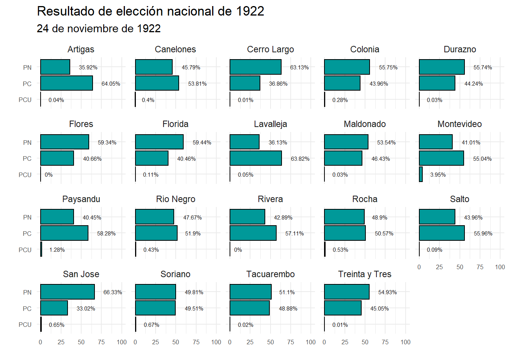
Elección presidencial 1926
| Fecha | Eleccion | Partido | Sigla | Votos | Porcentaje | Diputados | Senadores |
|---|---|---|---|---|---|---|---|
| 1926-11-28 | Presidencial | Partido Colorado | PC | 148277 | 50.118132 | 0 | 0 |
| 1926-11-28 | Presidencial | Partido Nacional | PN | 139959 | 47.306620 | 0 | 0 |
| 1926-11-28 | Presidencial | Partido Blanco | PB | 3844 | 1.299285 | 0 | 0 |
| 1926-11-28 | Presidencial | Partido Comunista del Uruguay | PCU | 3775 | 1.275963 | 0 | 0 |
Por departamento
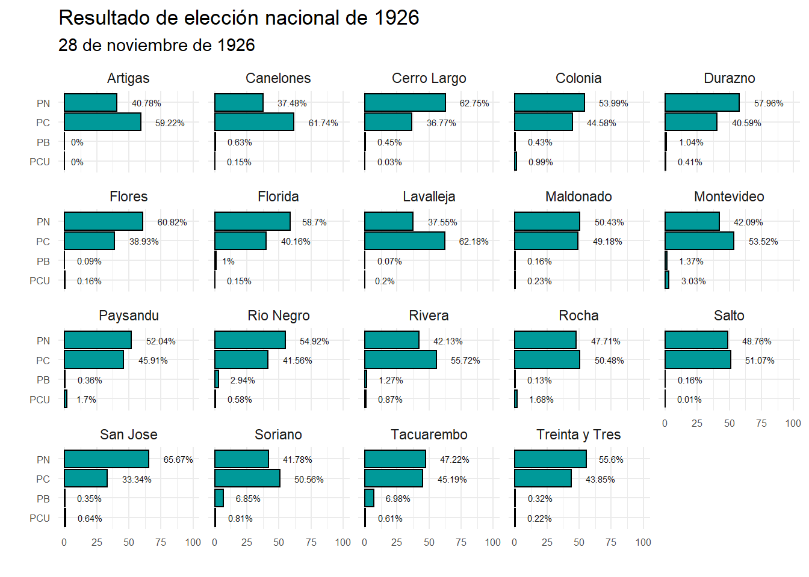
Elección presidencial 1930
| Fecha | Eleccion | Partido | Sigla | Votos | Porcentaje | Diputados | Senadores |
|---|---|---|---|---|---|---|---|
| 1930-11-30 | Presidencial | Partido Colorado | PC | 165757 | 52.1174677 | 0 | 0 |
| 1930-11-30 | Presidencial | Partido Nacional | PN | 149997 | 47.1621940 | 0 | 0 |
| 1930-11-30 | Presidencial | Partido Comunista del Uruguay | PCU | 2291 | 0.7203383 | 0 | 0 |
Por departamento
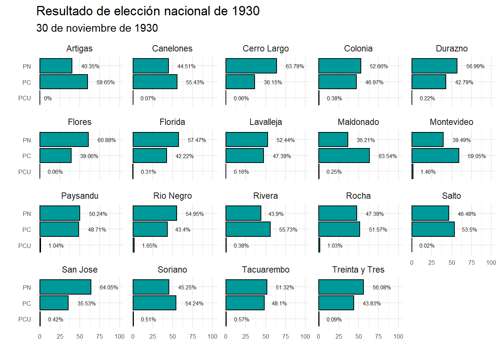
Elección presidencial 1938
| Fecha | Eleccion | Partido | Sigla | Votos | Porcentaje | Diputados | Senadores |
|---|---|---|---|---|---|---|---|
| 1938-03-27 | Presidencial | Partido Colorado | PC | 219311 | 58.3708613 | 0 | 0 |
| 1938-03-27 | Presidencial | Partido Nacional | PN | 114564 | 30.4918556 | 0 | 0 |
| 1938-03-27 | Presidencial | Union Civica | UC | 14802 | 3.9396359 | 0 | 0 |
| 1938-03-27 | Presidencial | Partido Socialista | PS | 13152 | 3.5004791 | 0 | 0 |
| 1938-03-27 | Presidencial | Concentracion Candida Diaz de Saravia | CCDS | 7876 | 2.0962419 | 0 | 0 |
| 1938-03-27 | Presidencial | Partido Comunista del Uruguay | PCU | 5736 | 1.5266688 | 0 | 0 |
| 1938-03-27 | Presidencial | Partido Independiente Democrata Feminista | PIDF | 122 | 0.0324710 | 0 | 0 |
| 1938-03-27 | Presidencial | Partido Autonomo Negro | PAN | 87 | 0.0231555 | 0 | 0 |
| 1938-03-27 | Presidencial | Partido por la Concordancia | PConcordancia | 69 | 0.0183647 | 0 | 0 |
| 1938-03-27 | Presidencial | General Melchor Pacheco y Obes | GMPO | 1 | 0.0002662 | 0 | 0 |
Por departamento
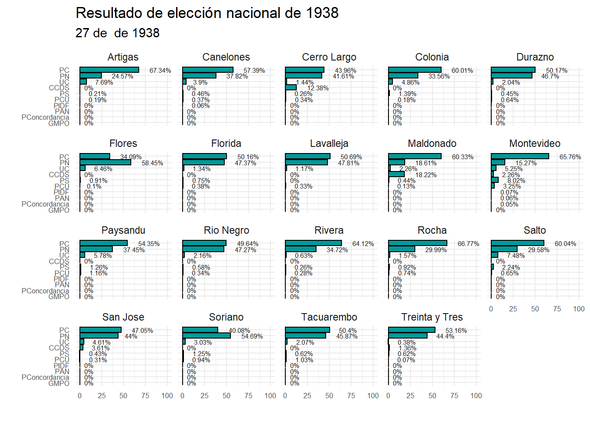
Elección presidencial 1942
| Fecha | Eleccion | Partido | Sigla | Votos | Porcentaje | Diputados | Senadores |
|---|---|---|---|---|---|---|---|
| 1942-11-29 | Presidencial | Partido Colorado | PC | 328599 | 57.1771854 | 58 | 20 |
| 1942-11-29 | Presidencial | Partido Nacional | PN | 131235 | 22.8352732 | 23 | 7 |
| 1942-11-29 | Presidencial | Partido Nacional Independiente | PNI | 67030 | 11.6634157 | 11 | 3 |
| 1942-11-29 | Presidencial | Union Civica | UC | 24433 | 4.2514133 | 4 | 1 |
| 1942-11-29 | Presidencial | Partido Comunista del Uruguay | PCU | 14330 | 2.4934618 | 2 | 0 |
| 1942-11-29 | Presidencial | Partido Socialista | PS | 9036 | 1.5722904 | 1 | 0 |
| 1942-11-29 | Presidencial | Partido la Concordancia | PConcordancia | 40 | 0.0069601 | 0 | 0 |
Por departamento
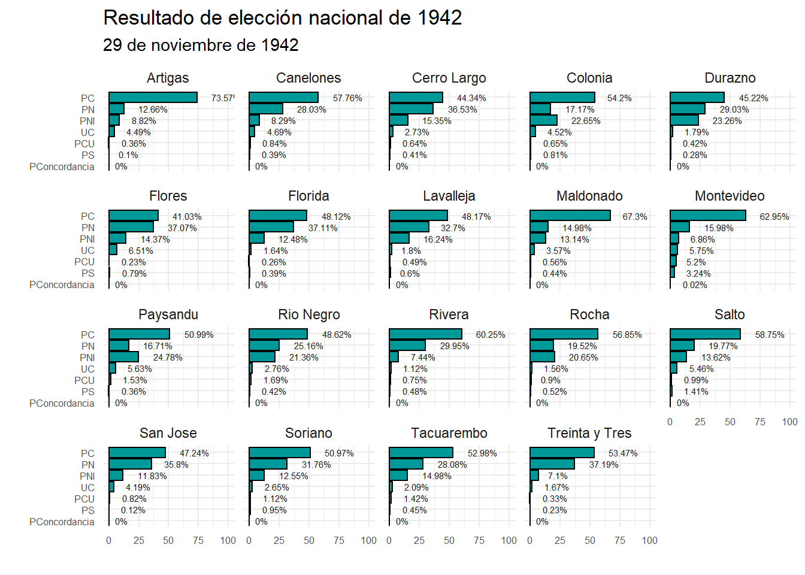
Elección presidencial 1946
| Fecha | Eleccion | Partido | Sigla | Votos | Porcentaje | Diputados | Senadores |
|---|---|---|---|---|---|---|---|
| 1946-11-24 | Presidencial | Partido Colorado | PC | 310390 | 46.3226482 | 47 | 16 |
| 1946-11-24 | Presidencial | Partido Nacional | PN | 208085 | 31.0546353 | 31 | 10 |
| 1946-11-24 | Presidencial | Partido Nacional Independiente | PNI | 62950 | 9.3946671 | 9 | 3 |
| 1946-11-24 | Presidencial | Union Civica | UC | 35147 | 5.2453433 | 5 | 1 |
| 1946-11-24 | Presidencial | Partido Comunista del Uruguay | PCU | 32677 | 4.8767202 | 5 | 1 |
| 1946-11-24 | Presidencial | Partido Socialista | PS | 15731 | 2.3476967 | 2 | 0 |
| 1946-11-24 | Presidencial | Partido Democrata | PD | 5081 | 0.7582892 | 0 | 0 |
Por departamento
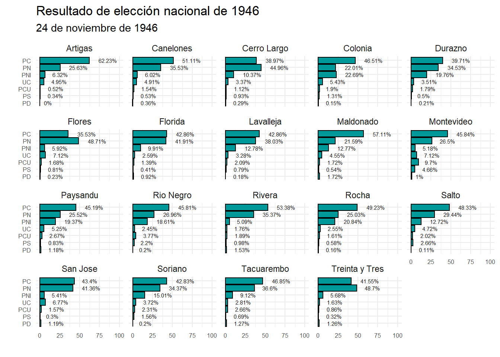
Elección presidencial 1950
| Fecha | Eleccion | Partido | Sigla | Votos | Porcentaje | Diputados | Senadores |
|---|---|---|---|---|---|---|---|
| 1950-11-26 | Presidencial | Partido Colorado | PC | 433440 | 52.3296245 | 52 | 18 |
| 1950-11-26 | Presidencial | Partido Nacional | PN | 254834 | 30.7663518 | 31 | 10 |
| 1950-11-26 | Presidencial | Partido Nacional Independiente | PNI | 62701 | 7.5699515 | 7 | 2 |
| 1950-11-26 | Presidencial | Union Civica | UC | 36100 | 4.3583874 | 4 | 0 |
| 1950-11-26 | Presidencial | Partido Comunista del Uruguay | PCU | 19026 | 2.2970271 | 0 | 0 |
| 1950-11-26 | Presidencial | Partido Socialista | PS | 17401 | 2.1008393 | 2 | 0 |
| 1950-11-26 | Presidencial | Partido Democrata | PD | 4715 | 0.5692464 | 0 | 0 |
| 1950-11-26 | Presidencial | Partido la Concordancia | PConcordancia | 38 | 0.0045878 | 0 | 0 |
| 1950-11-26 | Presidencial | Partido Liberal | PL | 23 | 0.0027768 | 0 | 0 |
| 1950-11-26 | Presidencial | Partido por la Defensa de los Derechos Ciudadanos | PDDC | 6 | 0.0007244 | 0 | 0 |
| 1950-11-26 | Presidencial | Partido del Pueblo | PP | 4 | 0.0004829 | 0 | 0 |
Por departamento
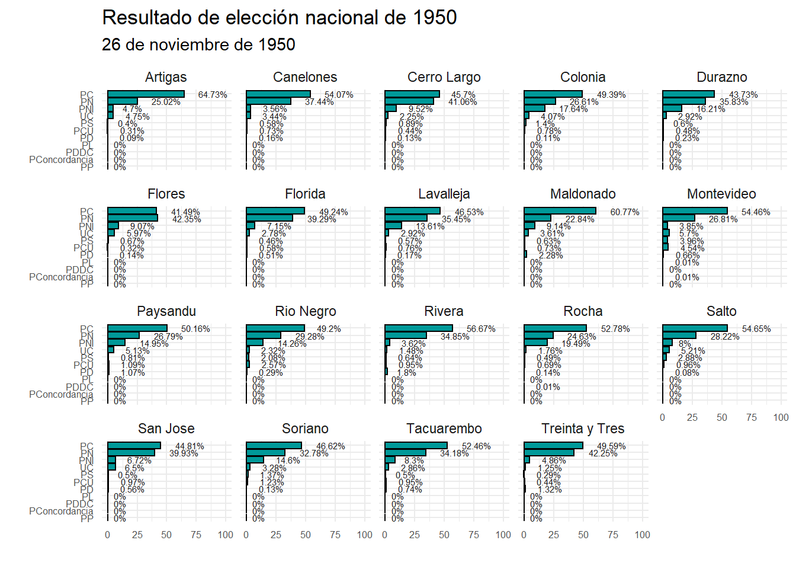
Elección presidencial 1954
| Fecha | Eleccion | Partido | Sigla | Votos | Porcentaje | Diputados | Senadores |
|---|---|---|---|---|---|---|---|
| 1954-11-28 | Presidencial | Partido Colorado | PC | 444429 | 50.5468347 | 51 | 17 |
| 1954-11-28 | Presidencial | Partido Nacional | PN | 309818 | 35.2369427 | 35 | 11 |
| 1954-11-28 | Presidencial | Union Civica | UC | 44255 | 5.0333128 | 5 | 1 |
| 1954-11-28 | Presidencial | Partido Nacional Independiente | PNI | 32341 | 3.6782820 | 3 | 1 |
| 1954-11-28 | Presidencial | Partido Socialista | PS | 28704 | 3.2646302 | 3 | 1 |
| 1954-11-28 | Presidencial | Partido Comunista del Uruguay | PCU | 19541 | 2.2224825 | 2 | 0 |
| 1954-11-28 | Presidencial | Frente Anticolegialista del Pueblo | FAP | 89 | 0.0101224 | 0 | 0 |
| 1954-11-28 | Presidencial | Partido Obrero | PO | 65 | 0.0073927 | 0 | 0 |
Por departamento

Elección presidencial 1958
| Fecha | Eleccion | Partido | Sigla | Votos | Porcentaje | Diputados | Senadores |
|---|---|---|---|---|---|---|---|
| 1958-11-30 | Presidencial | Partido Nacional | PN | 499425 | 49.6761366 | 51 | 17 |
| 1958-11-30 | Presidencial | Partido Colorado | PC | 379062 | 37.7040310 | 38 | 12 |
| 1958-11-30 | Presidencial | Union Civica | UC | 37625 | 3.7424331 | 3 | 1 |
| 1958-11-30 | Presidencial | Partido Socialista | PS | 35478 | 3.5288782 | 3 | 1 |
| 1958-11-30 | Presidencial | Partido Comunista del Uruguay | PCU | 27080 | 2.6935571 | 2 | 0 |
| 1958-11-30 | Presidencial | Union Democrata Reformista | UDR | 19979 | 1.9872444 | 2 | 0 |
| 1958-11-30 | Presidencial | Movimiento Renovador | MRO | 6325 | 0.6291266 | 0 | 0 |
| 1958-11-30 | Presidencial | Partido de las clases Pasivas | PCP | 142 | 0.0141243 | 0 | 0 |
| 1958-11-30 | Presidencial | Partido Obrero Revoluacionario | POR | 142 | 0.0141243 | 0 | 0 |
| 1958-11-30 | Presidencial | Frente Obrero Sindical | FOS | 52 | 0.0051723 | 0 | 0 |
| 1958-11-30 | Presidencial | Partido Laborista | Plaborista | 52 | 0.0051723 | 0 | 0 |
Por departamento
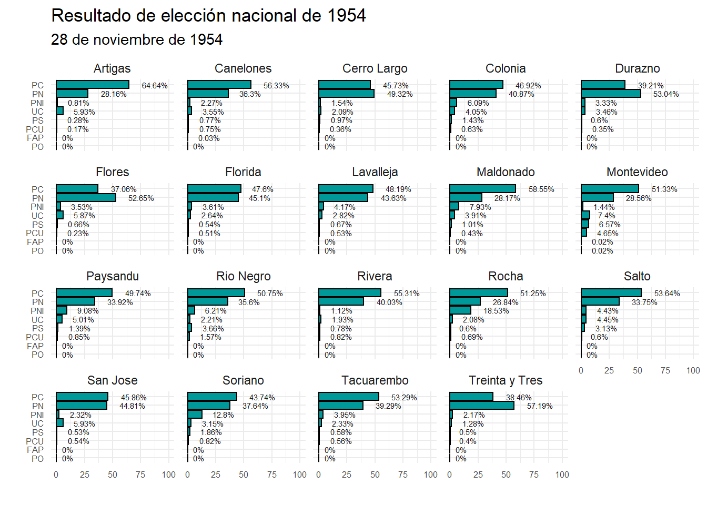
Elección presidencial 1966
| Fecha | Eleccion | Partido | Sigla | Votos | Porcentaje | Diputados | Senadores |
|---|---|---|---|---|---|---|---|
| 1966-11-27 | Presidencial | Partido Colorado | PC | 607580 | 49.3282098 | 50 | 17 |
| 1966-11-27 | Presidencial | Partido Nacional | PN | 496908 | 40.3429706 | 41 | 13 |
| 1966-11-27 | Presidencial | Frente Izquierda de Liberacion | FIDEL | 69750 | 5.6628635 | 5 | 1 |
| 1966-11-27 | Presidencial | Partido Democrata Cristiano | PDC | 37219 | 3.0217365 | 3 | 0 |
| 1966-11-27 | Presidencial | Partido Socialista | PS | 11559 | 0.9384522 | 0 | 0 |
| 1966-11-27 | Presidencial | Movimiento Civico Cristiano | MCC | 4230 | 0.3434253 | 0 | 0 |
| 1966-11-27 | Presidencial | Union Popular | UP | 2657 | 0.2157165 | 0 | 0 |
| 1966-11-27 | Presidencial | Partido Agrario y del Trabajo | PAT | 1616 | 0.1311998 | 0 | 0 |
| 1966-11-27 | Presidencial | Partido Laborista | Plaborista | 74 | 0.0060079 | 0 | 0 |
| 1966-11-27 | Presidencial | Partido Federal | PF | 72 | 0.0058455 | 0 | 0 |
| 1966-11-27 | Presidencial | Partido por el Departamento de Solis | PDS | 44 | 0.0035723 | 0 | 0 |
Por departamento
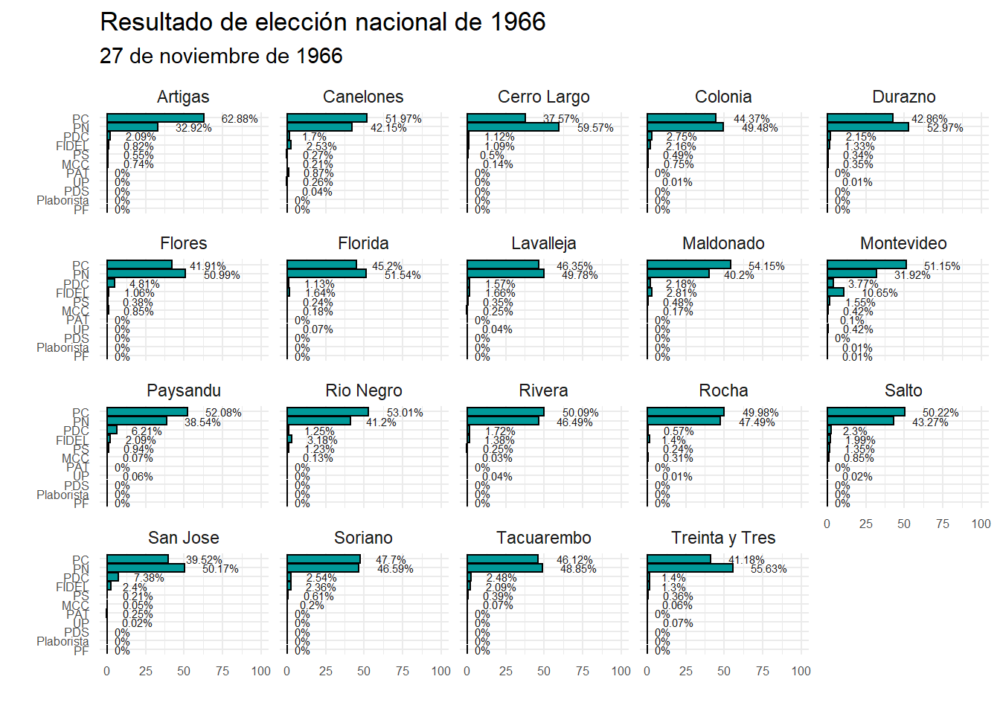
Elección presidencial 1971
| Fecha | Eleccion | Partido | Sigla | Votos | Porcentaje | Diputados | Senadores |
|---|---|---|---|---|---|---|---|
| 1971-11-28 | Presidencial | Partido Colorado | PC | 681624 | 39.7966798 | 41 | 14 |
| 1971-11-28 | Presidencial | Partido Nacional | PN | 668822 | 39.0492338 | 40 | 12 |
| 1971-11-28 | Presidencial | Frente Amplio | FA | 304275 | 17.7651238 | 18 | 5 |
| 1971-11-28 | Presidencial | Voto Anulado | VA | 42508 | 2.4818335 | 0 | 0 |
| 1971-11-28 | Presidencial | Union Radical Cristiana | URC | 8844 | 0.5163578 | 0 | 0 |
| 1971-11-28 | Presidencial | Voto en Blanco | VB | 6139 | 0.3584261 | 0 | 0 |
| 1971-11-28 | Presidencial | Partido de Jubilados y Pensionistas | PJP | 288 | 0.0168149 | 0 | 0 |
| 1971-11-28 | Presidencial | Movimiento Justiciero | MJ | 241 | 0.0140708 | 0 | 0 |
| 1971-11-28 | Presidencial | Partido Juventud por el Desarrollo Oriental | PJDO | 25 | 0.0014596 | 0 | 0 |
Por departamento
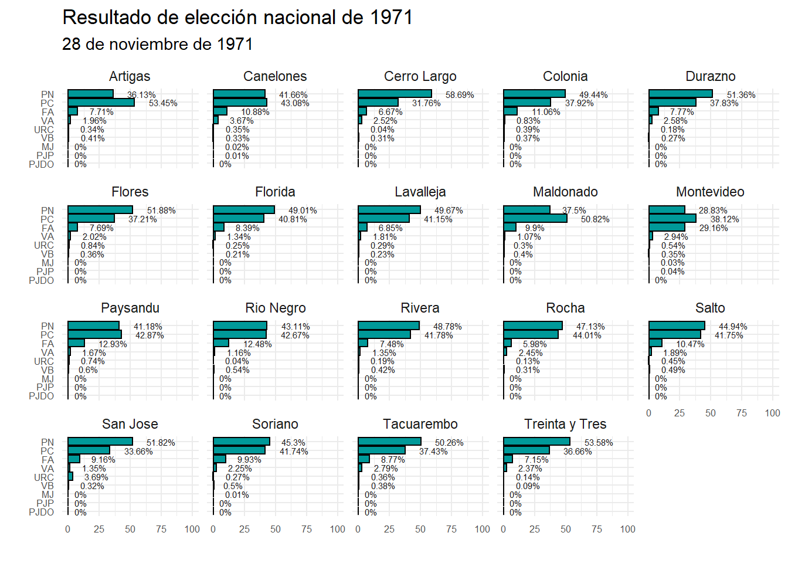
Elección presidencial 1984
| Fecha | Eleccion | Partido | Sigla | Votos | Porcentaje | Diputados | Senadores |
|---|---|---|---|---|---|---|---|
| 1984-11-25 | Presidencial | Partido Colorado | PC | 777701 | 40.2767111 | 41 | 14 |
| 1984-11-25 | Presidencial | Partido Nacional | PN | 660738 | 34.2192610 | 0 | 11 |
| 1984-11-25 | Presidencial | Frente Amplio | FA | 401103 | 20.7729058 | 21 | 6 |
| 1984-11-25 | Presidencial | Union Civica | UC | 45841 | 2.3740804 | 0 | 0 |
| 1984-11-25 | Presidencial | Voto en Blanco | VB | 28082 | 1.4543515 | 0 | 0 |
| 1984-11-25 | Presidencial | Voto Anulado | VA | 16487 | 0.8538527 | 0 | 0 |
| 1984-11-25 | Presidencial | Partido de los Trabajadores | PT | 488 | 0.0252733 | 0 | 0 |
| 1984-11-25 | Presidencial | Union Patriotica | Upat | 302 | 0.0156404 | 0 | 0 |
| 1984-11-25 | Presidencial | Partido Convergencia | PConvergencia | 153 | 0.0079238 | 0 | 0 |
Por departamento
Elección presidencial 1989
| Fecha | Eleccion | Partido | Sigla | Votos | Porcentaje | Diputados | Senadores |
|---|---|---|---|---|---|---|---|
| 1989-11-28 | Presidencial | Partido Nacional | PN | 768031 | 37.3340573 | 0 | 0 |
| 1989-11-28 | Presidencial | Partido Colorado | PC | 596123 | 28.9775937 | 0 | 0 |
| 1989-11-28 | Presidencial | Frente Amplio | FA | 418282 | 20.3327264 | 0 | 0 |
| 1989-11-28 | Presidencial | Nuevo Espacio | NE | 177212 | 8.6142916 | 0 | 0 |
| 1989-11-28 | Presidencial | Voto en Blanco | VB | 64284 | 3.1248511 | 0 | 0 |
| 1989-11-28 | Presidencial | Voto Anulado | VA | 21485 | 1.0443878 | 0 | 0 |
| 1989-11-28 | Presidencial | Partido Verde Ecologista | PVE | 10835 | 0.5266903 | 0 | 0 |
| 1989-11-28 | Presidencial | Movimiento Justiciero | MJ | 441 | 0.0214371 | 0 | 0 |
| 1989-11-28 | Presidencial | Partido de los Trabajadores | PT | 303 | 0.0147289 | 0 | 0 |
| 1989-11-28 | Presidencial | Partido Convergencia | PConvergencia | 190 | 0.0092359 | 0 | 0 |
Por departamento
Elección presidencial 1994
| Fecha | Eleccion | Partido | Sigla | Votos | Porcentaje | Diputados | Senadores |
|---|---|---|---|---|---|---|---|
| 1994-11-27 | Presidencial | Partido Colorado | PC | 655481 | 30.8442778 | 0 | 0 |
| 1994-11-27 | Presidencial | Partido Nacional | PN | 631622 | 29.7215700 | 0 | 0 |
| 1994-11-27 | Presidencial | Frente Amplio | FA | 619820 | 29.1662157 | 0 | 0 |
| 1994-11-27 | Presidencial | Nuevo Espacio | NE | 104773 | 4.9301925 | 0 | 0 |
| 1994-11-27 | Presidencial | Voto en Blanco | VB | 71142 | 3.3476540 | 0 | 0 |
| 1994-11-27 | Presidencial | Voto Anulado | VA | 28822 | 1.3562464 | 0 | 0 |
| 1994-11-27 | Presidencial | Partido Verde Ecologista | PVE | 5498 | 0.2587136 | 0 | 0 |
| 1994-11-27 | Presidencial | Partido del Sol | Psol | 2258 | 0.1062523 | 0 | 0 |
| 1994-11-27 | Presidencial | Union Civica | UC | 2063 | 0.0970764 | 0 | 0 |
| 1994-11-27 | Presidencial | Partido Azul | PA | 1645 | 0.0774070 | 0 | 0 |
| 1994-11-27 | Presidencial | Partido por la Seguridad Social | PSS | 828 | 0.0389623 | 0 | 0 |
| 1994-11-27 | Presidencial | Partido de los Trabajadores | PT | 378 | 0.0177871 | 0 | 0 |
| 1994-11-27 | Presidencial | Partido Alianza Oriental | PAO | 333 | 0.0156696 | 0 | 0 |
| 1994-11-27 | Presidencial | Movimiento Justiciero | MJ | 161 | 0.0075760 | 0 | 0 |
| 1994-11-27 | Presidencial | Partido Democrata Liberal | PDL | 120 | 0.0056467 | 0 | 0 |
| 1994-11-27 | Presidencial | Partido Republicano | PRepublicano | 117 | 0.0055055 | 0 | 0 |
| 1994-11-27 | Presidencial | Movimiento Progresista | MP | 69 | 0.0032469 | 0 | 0 |
Por departamento
Elección presidencial 1999
| Fecha | Eleccion | Partido | Sigla | Votos | Porcentaje | Diputados | Senadores |
|---|---|---|---|---|---|---|---|
| 1999-10-31 | Presidencial | Frente Amplio | FA | 860802 | 39.0473166 | 0 | 0 |
| 1999-10-31 | Presidencial | Partido Colorado | PC | 703931 | 31.9314043 | 0 | 0 |
| 1999-10-31 | Presidencial | Partido Nacional | PN | 478980 | 21.7272773 | 0 | 0 |
| 1999-10-31 | Presidencial | Nuevo Espacio | NE | 97953 | 4.4433003 | 0 | 0 |
| 1999-10-31 | Presidencial | Voto en Blanco | VB | 35273 | 1.6000381 | 0 | 0 |
| 1999-10-31 | Presidencial | Voto Anulado | VA | 22462 | 1.0189112 | 0 | 0 |
| 1999-10-31 | Presidencial | Union Civica | UC | 5109 | 0.2317522 | 0 | 0 |
Por departamento
Elección presidencial 2004
| Fecha | Eleccion | Partido | Sigla | Votos | Porcentaje | Diputados | Senadores |
|---|---|---|---|---|---|---|---|
| 2004-10-31 | Presidencial | Frente Amplio | FA | 1113944 | 50.3801085 | 0 | 0 |
| 2004-10-31 | Presidencial | Partido Nacional | PN | 757947 | 34.2795079 | 0 | 0 |
| 2004-10-31 | Presidencial | Partido Colorado | PC | 231037 | 10.4490613 | 0 | 0 |
| 2004-10-31 | Presidencial | Partido Independiente | PI | 40401 | 1.8272074 | 0 | 0 |
| 2004-10-31 | Presidencial | Voto en Blanco | VB | 31031 | 1.4034324 | 0 | 0 |
| 2004-10-31 | Presidencial | Voto Anulado | VA | 21541 | 0.9742302 | 0 | 0 |
| 2004-10-31 | Presidencial | Partido Intransigente | PIntra | 8404 | 0.3800859 | 0 | 0 |
| 2004-10-31 | Presidencial | Union Civica | UC | 4757 | 0.2151438 | 0 | 0 |
| 2004-10-31 | Presidencial | Partido Liberal | PL | 1493 | 0.0675236 | 0 | 0 |
| 2004-10-31 | Presidencial | Partido de los Trabajadores | PT | 524 | 0.0236988 | 0 | 0 |
Por departamento
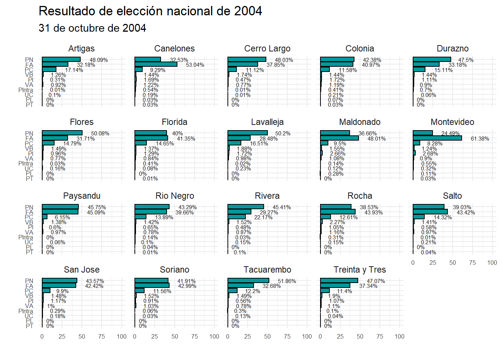
Elección presidencial 2009
| Fecha | Eleccion | Partido | Sigla | Votos | Porcentaje | Diputados | Senadores |
|---|---|---|---|---|---|---|---|
| 2009-10-25 | Presidencial | Frente Amplio | FA | 1093869 | 48.4860050 | 0 | 0 |
| 2009-10-25 | Presidencial | Partido Nacional | PN | 657327 | 29.1361764 | 0 | 0 |
| 2009-10-25 | Presidencial | Partido Colorado | PC | 383912 | 17.0169912 | 0 | 0 |
| 2009-10-25 | Presidencial | Partido Independiente | PI | 56156 | 2.4891281 | 0 | 0 |
| 2009-10-25 | Presidencial | Voto Anulado | VA | 28186 | 1.2493512 | 0 | 0 |
| 2009-10-25 | Presidencial | Voto en Blanco | VB | 21435 | 0.9501115 | 0 | 0 |
| 2009-10-25 | Presidencial | Asamblea Popular | AP | 15166 | 0.6722366 | 0 | 0 |
Por departamento
Elección presidencial 2014
| Fecha | Eleccion | Partido | Sigla | Votos | Porcentaje | Diputados | Senadores |
|---|---|---|---|---|---|---|---|
| 2014-10-26 | Presidencial | Frente Amplio | FA | 1123609 | 47.7902909 | 0 | 0 |
| 2014-10-26 | Presidencial | Partido Nacional | PN | 727373 | 30.9372453 | 0 | 0 |
| 2014-10-26 | Presidencial | Partido Colorado | PC | 302882 | 12.8824341 | 0 | 0 |
| 2014-10-26 | Presidencial | Partido Independiente | PI | 72098 | 3.0665333 | 0 | 0 |
| 2014-10-26 | Presidencial | Voto en Blanco | VB | 44690 | 1.9007930 | 0 | 0 |
| 2014-10-26 | Presidencial | Voto Anulado | VA | 33453 | 1.4228514 | 0 | 0 |
| 2014-10-26 | Presidencial | Partido Asamblea Popular | PAP | 25966 | 1.1044079 | 0 | 0 |
| 2014-10-26 | Presidencial | Partido Ecologista Radical Intransigente | PERI | 17835 | 0.7585733 | 0 | 0 |
| 2014-10-26 | Presidencial | Partido de los Trabajadores | PT | 3218 | 0.1368707 | 0 | 0 |
Por departamento
Elección presidencial 2019
| Fecha | Eleccion | Partido | Sigla | Votos | Porcentaje | Diputados | Senadores |
|---|---|---|---|---|---|---|---|
| 2019-10-27 | Presidencial | Frente Amplio | FA | 949376 | 39.2587542 | 0 | 0 |
| 2019-10-27 | Presidencial | Partido Nacional | PN | 696452 | 28.7997989 | 0 | 0 |
| 2019-10-27 | Presidencial | Partido Colorado | PC | 300177 | 12.4129692 | 0 | 0 |
| 2019-10-27 | Presidencial | Cabildo Abierto | CA | 268736 | 11.1128157 | 0 | 0 |
| 2019-10-27 | Presidencial | Voto Anulado | VA | 44597 | 1.8441826 | 0 | 0 |
| 2019-10-27 | Presidencial | Partido Ecologista Radical Intransigente | PERI | 33461 | 1.3836848 | 0 | 0 |
| 2019-10-27 | Presidencial | Voto en Blanco | VB | 28691 | 1.1864350 | 0 | 0 |
| 2019-10-27 | Presidencial | Partido de la Gente | PdeG | 26313 | 1.0880995 | 0 | 0 |
| 2019-10-27 | Presidencial | Partido Independiente | PI | 23580 | 0.9750841 | 0 | 0 |
| 2019-10-27 | Presidencial | Asamblea Popular | AP | 19728 | 0.8157955 | 0 | 0 |
| 2019-10-27 | Presidencial | Partido Verde Animalista | PVA | 19392 | 0.8019012 | 0 | 0 |
| 2019-10-27 | Presidencial | Partido Digital | Pdigit. | 6363 | 0.2631238 | 0 | 0 |
| 2019-10-27 | Presidencial | Partido de los Trabajadores | PT | 1387 | 0.0573555 | 0 | 0 |